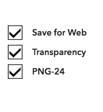
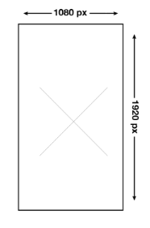
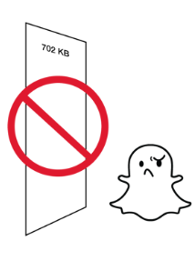
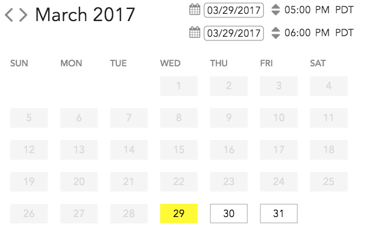
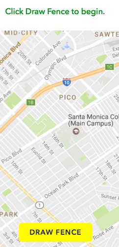
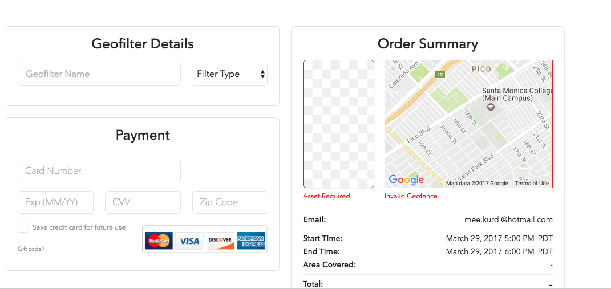

Community Geofilters Tips
1- Please submit a web-optimized, transparent PNG.
2- PNG should have a width of 1080 pixels and a height of 1920 pixels.
3- PNG must be under 300 KB.
After doing all the above TIPS you can now click NEXT to submit your design and choose the locations
On-DEMAND Geofilters steps
1- upload or design.

2- Choose dates.

3- Choose area.

3- Submit.
After doing all the above steps now you should wait for the approval.